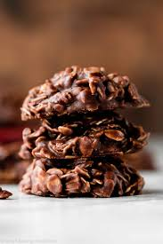

No Bake Cookies

Description
Delicious no-bake chocolate oatmeal cookies with peanut butter and cocoa flavor — all without turning on the oven.
Ingridients
- 2 cups white sugar
- 1/2cup margarine
- 1/2 cup milk
- 3 tablespoons unsweetened cocoa powder
- 1 pinch salt
- 3 cups quick cooking oats
- 1/2 cup peanutbutter
- 1 teaspoon vanilla extract
Steps
- Bring sugar, margarine, milk, cocoa, and salt to a rapid boil in a saucepan for 1 minute.
- Add quick-cooking oats, peanut butter, and vanilla; mix well.
- Working quickly, drop by teaspoonfuls onto waxed paper and let cool
- All Done!